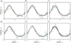
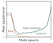
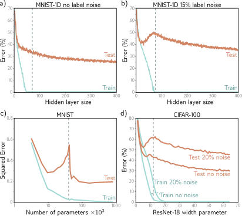
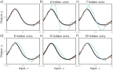

# Run this if you're in a Colab to install MNIST 1D repository
!pip install git+https://github.com/greydanus/mnist1d
import torch, torch.nn as nn
from torch.utils.data import TensorDataset, DataLoader
from torch.optim.lr_scheduler import StepLR
import numpy as np
import matplotlib.pyplot as plt
import mnist1d
import random
random.seed(0)
# Try attaching to GPU -- Use "Change Runtime Type to change to GPUT"
DEVICE = str(torch.device('cuda' if torch.cuda.is_available() else 'cpu'))
print('Using:', DEVICE)
args = mnist1d.data.get_dataset_args()
args.num_samples = 8000
args.train_split = 0.5
args.corr_noise_scale = 0.25
args.iid_noise_scale=2e-2
data = mnist1d.data.get_dataset(args, path='./mnist1d_data.pkl', download=False, regenerate=True)
# Add 15% noise to training labels
for c_y in range(len(data['y'])):
random_number = random.random()
if random_number < 0.15 :
random_int = int(random.random() * 10)
data['y'][c_y] = random_int
# The training and test input and outputs are in
# data['x'], data['y'], data['x_test'], and data['y_test']
print("Examples in training set: {}".format(len(data['y'])))
print("Examples in test set: {}".format(len(data['y_test'])))
print("Dimensionality of each example: {}".format(data['x'].shape[-1]))
# Initialize the parameters with He initialization
def weights_init(layer_in):
if isinstance(layer_in, nn.Linear):
nn.init.kaiming_uniform_(layer_in.weight)
layer_in.bias.data.fill_(0.0)
# Return an initialized model with two hidden layers and n_hidden hidden units at each
def get_model(n_hidden):
D_i = 40 # Input dimensions
D_k = n_hidden # Hidden dimensions
D_o = 10 # Output dimensions
# Define a model with two hidden layers
# And ReLU activations between them
model = nn.Sequential(
nn.Linear(D_i, D_k),
nn.ReLU(),
nn.Linear(D_k, D_k),
nn.ReLU(),
nn.Linear(D_k, D_o))
# Call the function you just defined
model.apply(weights_init)
# Return the model
return model ;
def fit_model(model, data, n_epoch):
# choose cross entropy loss function (equation 5.24)
loss_function = torch.nn.CrossEntropyLoss()
# construct SGD optimizer and initialize learning rate and momentum
# optimizer = torch.optim.Adam(model.parameters(), lr=0.01)
optimizer = torch.optim.SGD(model.parameters(), lr = 0.01, momentum=0.9)
x_train = torch.tensor(data['x'].astype('float32'))
y_train = torch.tensor(data['y'].transpose().astype('long'))
x_test= torch.tensor(data['x_test'].astype('float32'))
y_test = torch.tensor(data['y_test'].astype('long'))
# load the data into a class that creates the batches
data_loader = DataLoader(TensorDataset(x_train,y_train), batch_size=100, shuffle=True, worker_init_fn=np.random.seed(1))
for epoch in range(n_epoch):
# loop over batches
for i, batch in enumerate(data_loader):
# retrieve inputs and labels for this batch
x_batch, y_batch = batch
# zero the parameter gradients
optimizer.zero_grad()
# forward pass -- calculate model output
pred = model(x_batch)
# compute the loss
loss = loss_function(pred, y_batch)
# backward pass
loss.backward()
# SGD update
optimizer.step()
# Run whole dataset to get statistics -- normally wouldn't do this
pred_train = model(x_train)
pred_test = model(x_test)
_, predicted_train_class = torch.max(pred_train.data, 1)
_, predicted_test_class = torch.max(pred_test.data, 1)
errors_train = 100 - 100 * (predicted_train_class == y_train).float().sum() / len(y_train)
errors_test= 100 - 100 * (predicted_test_class == y_test).float().sum() / len(y_test)
losses_train = loss_function(pred_train, y_train).item()
losses_test= loss_function(pred_test, y_test).item()
if epoch%100 ==0 :
print(f'Epoch {epoch:5d}, train loss {losses_train:.6f}, train error {errors_train:3.2f}, test loss {losses_test:.6f}, test error {errors_test:3.2f}')
return errors_train, errors_test
def count_parameters(model):
return sum(p.numel() for p in model.parameters() if p.requires_grad)Double Descent

Overfitting. a–c) A model with three regions is fit to three different datasets of fifteen points each. The result is similar in all three cases (i.e., the variance is low). d–f) A model with ten regions is fit to the same datasets. The additional flexibility does not necessarily produce better predictions. While these three models each describe the training data better, they are not necessarily closer to the true underlying function (black curve). Instead, they overfit the data and describe the noise, and the variance (difference between fitted curves) is larger.

Bias-variance trade-off. The bias and variance terms from equation 8.7 are plotted as a function of the model capacity (number of hidden units / linear regions in range of data) in the simplified model using training data from figure 8.8. As the capacity increases, the bias (solid orange line) decreases, but the variance (solid cyan line) increases. The sum of these two terms (dashed gray line) is minimized when the capacity is four.
Explanation

Double descent. a) Training and test error on MNIST-1D for a two-hidden layer network as we increase the number of hidden units (and hence parameters) in each layer. The training error decreases to zero as the number of parameters approaches the number of training examples (vertical dashed line). The test error does not show the expected bias-variance trade-off but continues to decrease even after the model has memorized the dataset. b) The same experiment is repeated with noisier training data. Again, the training error reduces to zero, although it now takes almost as many parameters as training points to memorize the dataset. The test error shows the predicted bias/variance trade-off; it decreases as the capacity increases but then increases again as we near the point where the training data is exactly memorized. However, it subsequently decreases again and ultimately reaches a better performance level. This is known as double descent. Depending on the loss function, the model, and the amount of noise in the data, the double descent pattern can be seen to a greater or lesser degree across many datasets. c) Results on MNIST (without label noise) with shallow neural network from Belkin et al. (2019). d) Results on CIFAR-100 with ResNet18 network (see chapter 11) from Nakkiran et al. (2021). See original papers for details.

Increasing capacity (hidden units) allows smoother interpolation between sparse data points. a) Consider this situation where the training data (orange circles) are sparse; there is a large region in the center with no data examples to constrain the model to mimic the true function (black curve). b) If we fit a model with just enough capacity to fit the training data (cyan curve), then it has to contort itself to pass through the training data, and the output predictions will not be smooth. c–f) However, as we add more hidden units, the model has the ability to interpolate between the points more smoothly (smoothest possible curve plotted in each case). However, unlike in this figure, it is not obliged to.
# This code will take a while (~30 mins on GPU) to run! Go and make a cup of coffee!
hidden_variables = np.array([2,4,6,8,10,14,18,22,26,30,35,40,45,50,55,60,70,80,90,100,120,140,160,180,200,250,300,400]) ;
errors_train_all = np.zeros_like(hidden_variables)
errors_test_all = np.zeros_like(hidden_variables)
total_weights_all = np.zeros_like(hidden_variables)
# loop over the dataset n_epoch times
n_epoch = 1000
# For each hidden variable size
for c_hidden in range(len(hidden_variables)):
print(f'Training model with {hidden_variables[c_hidden]:3d} hidden variables')
# Get a model
model = get_model(hidden_variables[c_hidden]) ;
# Count and store number of weights
total_weights_all[c_hidden] = count_parameters(model)
# Train the model
errors_train, errors_test = fit_model(model, data, n_epoch)
# Store the results
errors_train_all[c_hidden] = errors_train
errors_test_all[c_hidden]= errors_test
import matplotlib.pyplot as plt
import numpy as np
# Assuming data['y'] is available and contains the training examples
num_training_examples = len(data['y'])
# Find the index where total_weights_all is closest to num_training_examples
closest_index = np.argmin(np.abs(np.array(total_weights_all) - num_training_examples))
# Get the corresponding value of hidden variables
hidden_variable_at_num_training_examples = hidden_variables[closest_index]
# Plot the results
fig, ax = plt.subplots()
ax.plot(hidden_variables, errors_train_all, 'r-', label='train')
ax.plot(hidden_variables, errors_test_all, 'b-', label='test')
# Add a vertical line at the point where total weights equal the number of training examples
ax.axvline(x=hidden_variable_at_num_training_examples, color='g', linestyle='--', label='N(weights) = N(train)')
ax.set_ylim(0, 100)
ax.set_xlabel('No. hidden variables')
ax.set_ylabel('Error')
ax.legend()
plt.show()